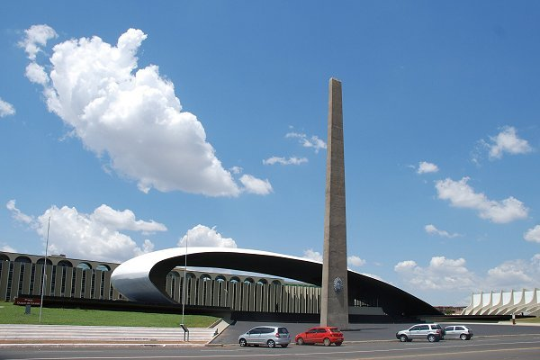
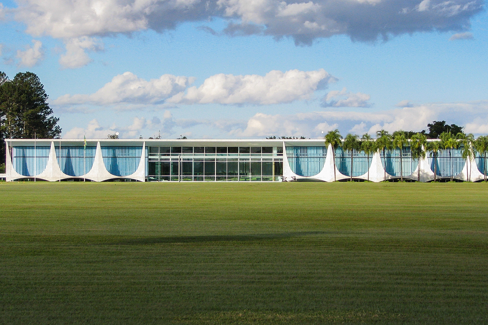

Praça dos cristais
A Praça Cívica, mais conhecida como Praça dos Cristais, é uma obra paisagística projetada pelo artista plástico Roberto Burle Marx e seu assistente Haruyoshi Ono. Está localizada no Setor Militar Urbano, em frente ao Quartel General do Exército, em Brasília.

Palacio da alvorada
O Palácio da Alvorada é um edifício localizado em Brasília, capital do Brasil. O palácio é designado como a residência oficial do Presidente do Brasil. Situa-se às margens do Lago Paranoá, tendo sido o primeiro edifício inaugurado na Capital Federal, em 30 de junho de 1958.

Praça dos tres poderes
A Praça dos Três Poderes, em Brasília, no Brasil, é um amplo espaço aberto entre os três edifícios monumentais que representam os três poderes da república brasileira: o Palácio do Planalto, sede do Executivo brasileiro, a sede do Supremo Tribunal Federal, a corte máxima do Judiciário, e o Congresso Nacional do Brasil